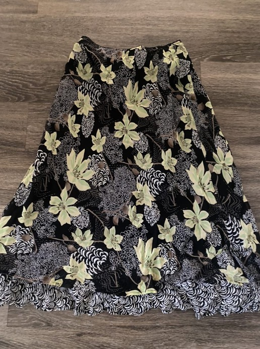
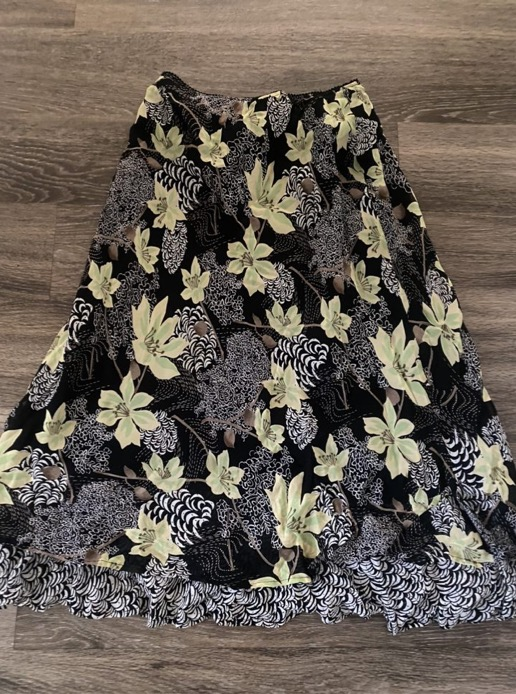

An important thing to remember is that the main goal of sustainability when it comes to fashion is to buy LESS, and limit the consumerism that brought us to this point at all.
Here are some tips to help YOU on your sustainability journey
Shop your own closet!
I know it sounds crazy, because all the media around us is all about what new stuff is in and where you can get it, but just taking a second to go through your own closet and find old clothes that might still fit you and things that might fufill the trends were all chasing now!
Be super intentional with all your shopping!
For the vast majority of Americans fast fashion is the most accessible way to get clothes. No one should be deprived of feeling good about their personal style, but when you shop fast fashion stores like Forever 21, Shein, and H&M. So when shopping these places think of things like what value will it add to your personal style, and could you find similar things through more ethical avenues or even make it yourself.
Find different ways to get new clothes
A great and accessible way to get new clothes is to thrift! Thrift stores have ample inventory for great prices, and they can also vary in price point and the items they carry- so there is something for everyone! In this way instead of supporting the fashion industry who's methods to produce new items hurts the environment and its laborers.
Use these links to learn more about sustainable fashion <3
What is Sustainable Fashion? Introduction to Sustainable Fashion What is Sustainable and Ethical Fashion? Why Should We Care about Sustainable Fashion? Why Sustainable Fashion?Here are some resources, websites, and brands to dress green <3
Here is a blog that links more resources Here is a website that has sustainable fashion brands Here is a website that has 35 ethical brands Here are some interesting sustainable fashion brands to check out! The 10 coolest ethical fashion brandsIf you feel a bit discouraged by your own ventures into sustainability, here is a photo gallery of a bunch of awesome things real people were able to thrift!

 
